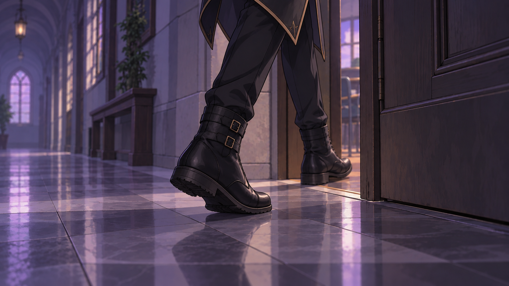
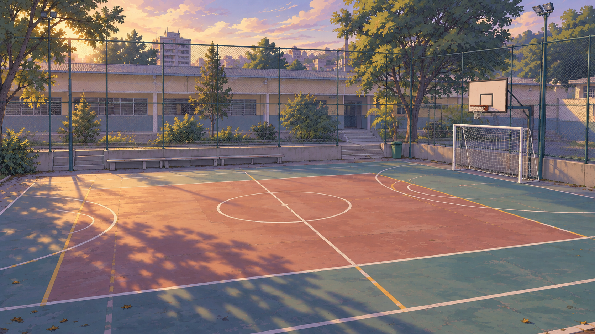
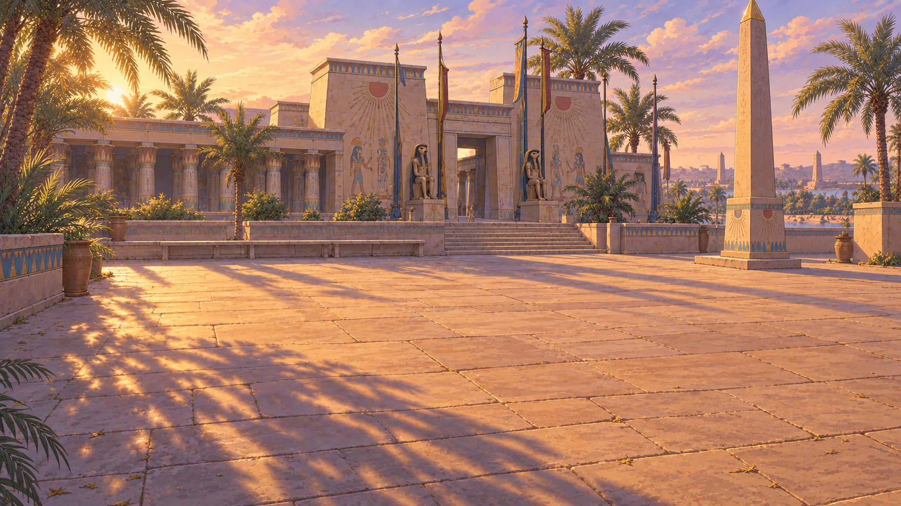
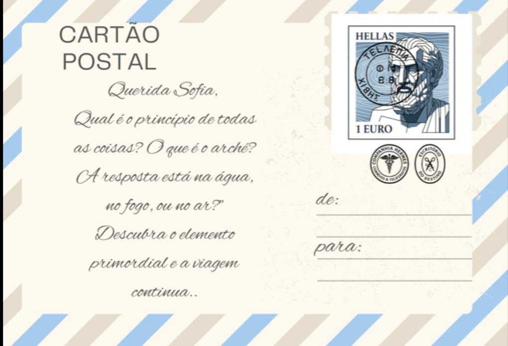
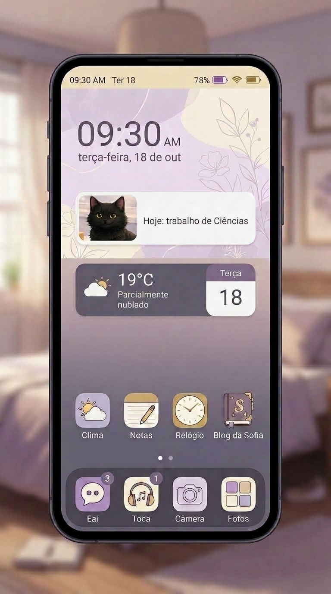

Eu vi as botas primeiro.
Pretas, de cano alto, com duas fivelas. Elas atravessaram a porta da Sala 17 pouco antes de eu chegar.
Não vi o rosto. Só o movimento e a porta aberta.
arco 2 · anotação 01
A luz estava no lugar errado.
Eu vi as botas primeiro.
Pretas, de cano alto, com duas fivelas. Elas atravessaram a porta da Sala 17 pouco antes de eu chegar.
Não vi o rosto. Só o movimento e a porta aberta.

Entrei logo depois.
A sala estava vazia.
Olhei embaixo das carteiras. A dignidade pode esperar quando alguém aparentemente aprende a evaporar.
Foi então que me lembrei de um trecho de A Hora que Não Existe.
A Hora que Não Existe · O Minuto Ausente
“Mei viu as botas desaparecerem pela porta. Quando entrou, não havia ninguém. Apenas a luz, parada no lugar errado. Ela seguiu o brilho até o fundo da sala. E encontrou um fantasma.”
O problema de ler fantasia demais é começar a reconhecer mistérios em situações perfeitamente comuns.
O problema maior é quando a própria página resolve participar.
A luz vinha da janela.
Não estava mais forte. Estava diferente.
A quadra continuava lá: a trave, a cesta e as linhas desbotadas. Mas um brilho atravessava o vidro num ângulo impossível.
Cheguei mais perto.


a janela
Um reflexo dourado-violeta atravessa o vidro.
A quadra desapareceu.
No lugar dela havia um pátio de pedra clara, palmeiras, colunas pintadas e um obelisco contra o céu.
Pisquei. Continuava lá.
Pisquei de novo. Às vezes insistir no método científico produz resultados.
Não produziu.
Quando me afastei da janela, havia uma carta sobre uma das carteiras. Ela não estava ali antes.
documento surgido sem autorização
Somente a região iluminada pode ser examinada.
“Viajante,
Antes de Mileto levantar sua voz filosófica [...] os sacerdotes de Heliópolis já conversavam com o sol.”
Heliópolis.
Pelo menos o absurdo agora tinha endereço.
A carta mencionava Mileto e sacerdotes que “conversavam com o Sol”. O restante permanecia sob uma sombra que não desaparecia.
Claro. Uma carta com controle próprio de acesso. Muito razoável.
Quando toquei no selo, a luz da janela se concentrou sobre o obelisco.
investigação principal
A luz muda de posição. As sombras guardam a ordem do tempo. Observe os três momentos e reconstrua o ciclo.
Observe a posição do Sol e a sombra.
Selecione os momentos na ordem em que acontecem.

objeto funcional desbloqueado
O notebook que Sofia já usava agora também pode organizar a investigação.
sinal opcional
Esta investigação é opcional e poderá ser retomada depois.
missão opcional
O Sol percorreu três posições. Para revelar o que vem depois, retorne três casas.
_ _ _ _ _

objeto de missão encontrado
Uma palavra antiga para uma pergunta que ainda não terminou.
A paisagem desapareceu como surgiu: sem qualquer explicação.
A quadra voltou para o lugar, perfeitamente inocente.
Guardei a carta.
Quando olhei para a porta, não havia sinal das botas ou de seu dono.
Ótimo.
Eu tinha ido até a Sala 17 com uma pergunta.
Saí com aproximadamente sete.

emblema conquistado
Você observou o que existia entre duas paisagens.

O celular vibrou. Caio enviou uma mensagem. Toque em Abrir E Aí?.
continua
O notebook e as pistas esperam na Sala. A próxima anotação continua o caso.
Entrar na minha Sala →